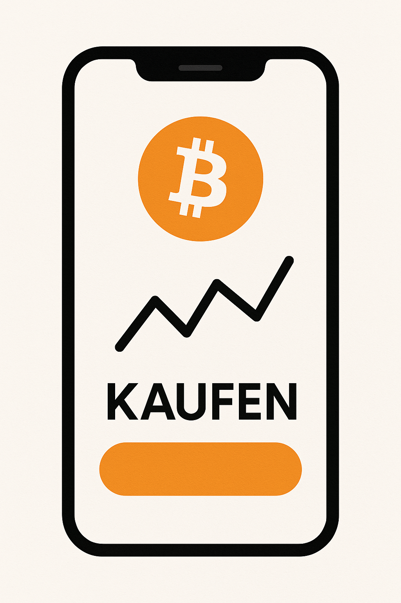
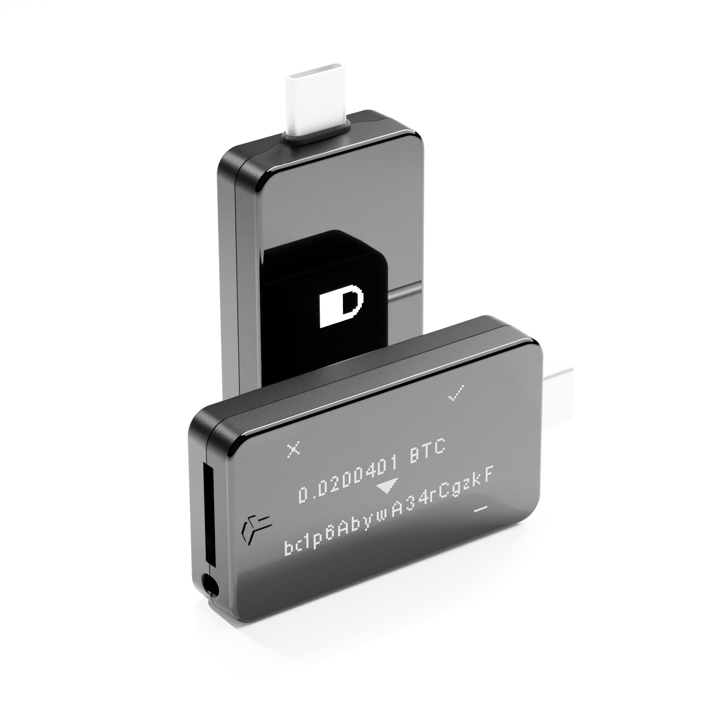
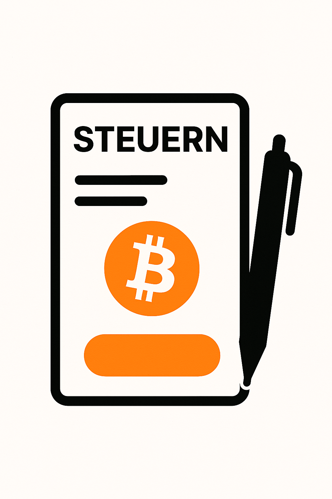
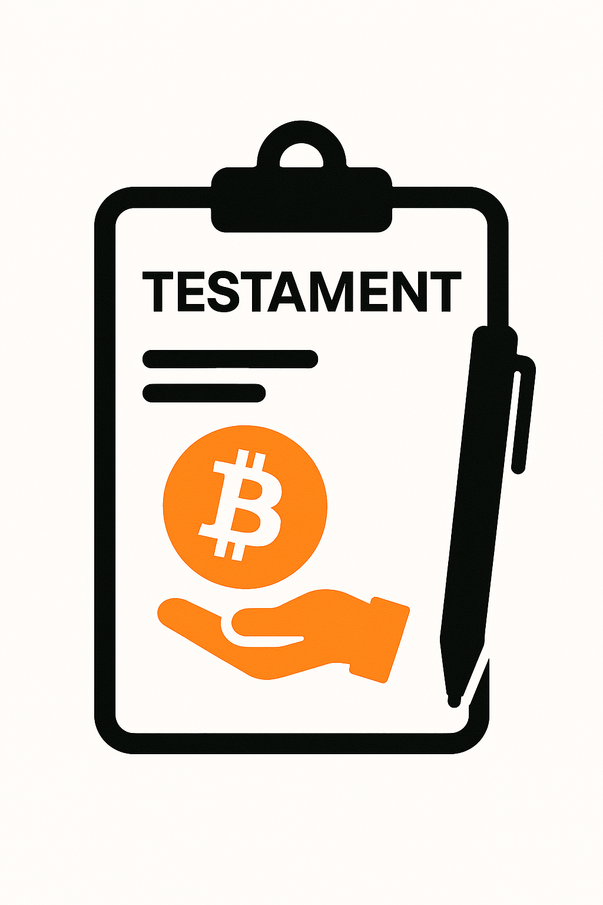

Bitcoin Beginner Guide
From your first steps to secure self-custody —
everything beginners need to know about Bitcoin.
1. Getting Started with Bitcoin
For beginners, the easiest entry point is buying Bitcoin through a trusted exchange. These are called custodial solutions — the exchange holds your Bitcoin on your behalf while you get started.
Exchanges with withdrawal support
Start with exchanges that allow you to later withdraw your Bitcoin to your own wallet:
- Bison — Crypto app by Börse Stuttgart
- Bitvavo — User-friendly European crypto exchange
- Kraken — Established global exchange with strong security
- Coinbase — Widely available with a simple interface
Services without direct withdrawal
These providers let you buy Bitcoin but don't support withdrawal to your own wallet:
- Trade Republic
- Smartbroker
Easy to use, but not ideal for long-term holding — you don't have full control over your Bitcoin.
ETPs / ETCs in Europe
In Europe you can also gain Bitcoin exposure via ETCs (Exchange Traded Commodities). Key points:
- An ETC tracks the price of Bitcoin — you don't hold real Bitcoin.
- Management fees apply; withdrawal to a personal wallet is not possible.
- For most beginners, buying real Bitcoin through an exchange is the better option.
Set up a DCA savings plan
Dollar-Cost Averaging (DCA) is the recommended strategy for beginners. Invest a fixed amount at regular intervals, regardless of the current price. This reduces the risk of emotional decisions during market volatility.

2. Going Deeper
To truly understand Bitcoin, explore the underlying technology, the economics, and the security concepts.
Recommended resources
- Andreas M. Antonopoulos (YouTube) — In-depth explanations of Bitcoin for all levels
- The Bitcoin Standard (book) — Foundational work on the economics of Bitcoin by Saifedean Ammous
- Mastering Bitcoin (book, free online) — Technical deep dive by Andreas M. Antonopoulos
- Podcasts: What Bitcoin Did, The Bitcoin Podcast, Stephan Livera Podcast
- Bitcoin Trivia Quiz — Test and build your knowledge through play
The more you learn, the clearer the principle "not your keys, not your coins" will become — and why self-custody matters.
3. Self-Custody
After your first experience with Bitcoin, consider moving to a self-custodial wallet. This gives you full control over your Bitcoin.
What does "non-custodial" mean?
Non-custodial means you alone hold the private key controlling your Bitcoin. No third party can freeze, confiscate, or lose your funds. The most important principle in Bitcoin: "Not your keys, not your coins."
- Not dependent on a third party's solvency
- Bitcoin cannot be frozen or confiscated
- No identity verification needed to access your own funds
- You bear full responsibility for the security of your private keys
Hardware wallets
A hardware wallet is the most secure option for most users:
- BitBox02 (Bitcoin-only edition) — Swiss-made, open-source, strong security standard
- Jade (Blockstream) — Open-source, air-gap capable
- Ledger — Widely used with broad app support
- Trezor — Pioneer of hardware wallets, open-source
Always buy directly from the manufacturer or an authorised retailer to avoid receiving tampered hardware.
Exchanges with direct hardware wallet withdrawal
- Relai — Simple Bitcoin purchase with direct withdrawal
- 21Bitcoin — Direct Bitcoin purchase platform
Backing up your seed phrase
Your seed phrase is everything. Lose it and your Bitcoin are gone forever:
- Paper — Write it on acid-free paper and store securely
- Steel wallet — Metal plate for fire- and water-resistant storage
- Mnemonic split — Split into three parts (e.g. home, safe deposit box, trusted person). Any two parts are enough to recover.
For beginners, avoid complex passphrase setups or multi-sig — these are for advanced users.

4. Taxes
Tax rules for Bitcoin vary by country. Always consult a tax advisor for your specific situation.
Hold period benefits (Germany)
In Germany, gains from selling Bitcoin are tax-free after a holding period of one year. This makes Bitcoin an attractive long-term investment. Rules may change — always verify current regulations.
Documentation is essential
Keep accurate records of all purchases and sales. Useful tools:
- Cointracking — Comprehensive tracking and tax reporting
- Koinly — Popular in many countries, supports many exchanges
- CoinLedger — Widely used in the US and UK
When in doubt, consult a tax advisor with cryptocurrency expertise.

5. Inheritance Planning
When self-custodying Bitcoin, plan for what happens when you're gone. Unlike a bank account, there is no customer service to restore access.
Why it matters
- Without the private key or seed phrase, Bitcoin are irrecoverable
- Your heirs need clear instructions on how to access your Bitcoin
- The plan must be both secure and understandable to non-technical people
Approaches
- Will with clear instructions — Describe the location of your seed phrase and how to use it
- Emergency document — A step-by-step guide for your heirs
- Seed phrase split — Distribute parts so they can only be combined in the case of inheritance
- Time-locked solutions — Systems that grant access after extended inactivity
Resources
- Bitcoins vererben — Comprehensive book on Bitcoin inheritance planning
- Consult a lawyer specialising in cryptocurrency and estate planning
Review and update your inheritance plan regularly — especially after major life changes or when you change your storage method.
